The Oertha Armorial
Awards of Arms (Simple Order of Precedence)
Part III
Updated 6/05/24
Anyone with the following:
has no arms registered with the College of Arms
Most of the information herein is based on the
I will insert Armigers who are not at this time listed
This will facilitate repairs to the O.P. while recognizing Awards given.
Kimmel Sableshire 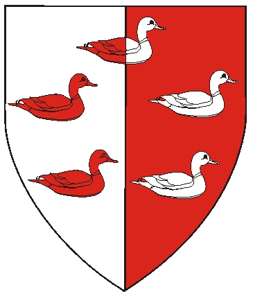
May 24, AS XXVII (1992) by Brendan & Aryana 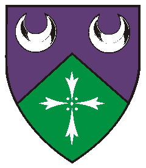
July 19, AS XXVII (1992) by Brendan & Aryana 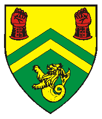
October 3, AS XXVII (1992) by Rolf & Mari 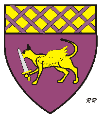
December 6, AS XXVII (1992) by Nicholaus & Alyssia 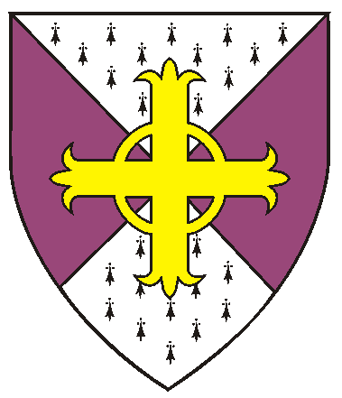
May 29, AS XXVIII (1993) Morbran & Margarita 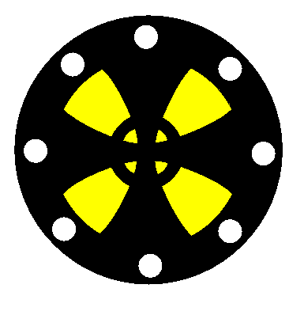
May 29, AS XXVIII (1993) Morbran & Margarita
July 25, AS XXVIII (1993) by Georg & Katarzina 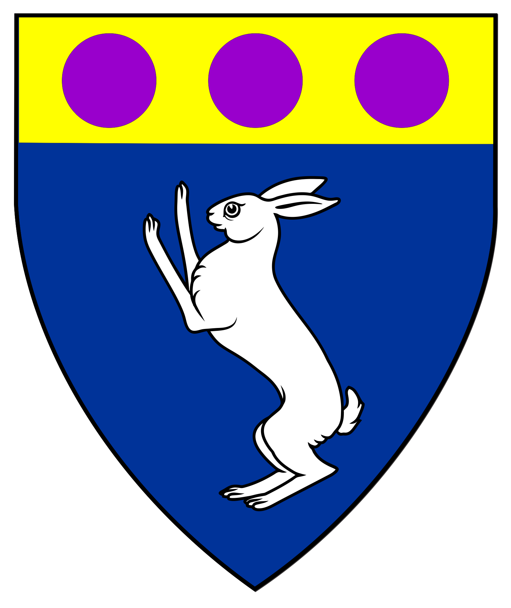 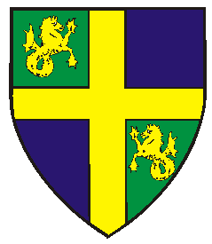
January 22, AS XXVIII (1994) by Morbran & Margarita 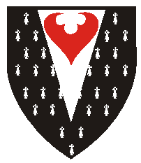
May 1, AS XXIX (1994) by * Unknown * 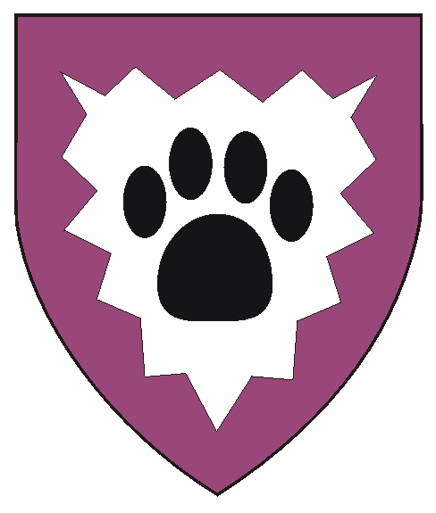
May 28, AS XXIX (1994) by Morbran & Margarita 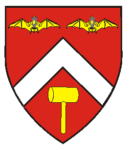
June 25, AS XXX (1995) by Kylson & Anne 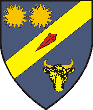
June 25, AS XXX (1995) by Kylson & Anne
To the Patents (Knights, Laurels, Pelicans)
To the Grants of Arms, Leaves of Achievement, and Court Baronies : Part I
Awards of Arms Part III
To the AA's Part V Page
To the AA's Part VI Page
To the AA's Part VIII Page
Emblazons marked with "RR" involve artwork of Robert Rootes,

Blazons without visual shield/designs are in the works.
West Kingdom Order of Precedence, or the O.P.'s of other Kingdoms.
Contact me to forward corrections or with name/spelling preferences.
in the West OP in the following manner:
AWARDS OF ARMS
Armigers of Oertha (continued)
January 1992
the Reign of Brendan IV & Aryana IV
through July 1996
the Reign of Gregor & Alicianne
January 23, AS XXVI (1992) by Radnor & Esmirelda
Margaret of Glenkirk
March 28, AS XXVI (1992) by Brendan & Aryana
Makedonii Dmitrii Aleksievich Kolchin (aka Dmitrii de Montfort)
Per pale argent and gules, five ducks naiant
to sinister in annulo counterchanged.
Padraig of Cairnburgh
July 19, AS XXVII (1992) by Nicholaus & Alyssia
Rhiannon of Lostwithiel
Per chevron azure and vert, a chevron between two crescents
and a cross of ermine spots argent.
Serenia of Oertha
July 19, AS XXVII (1992) by Brendan & Aryana
Wilhelmina Catherin Blackstar of Ravens Rock
July 19, AS XXVII (1992) by Nicholaus & Alyssia
Gregory the Pict
August 22, AS XXVII (1992) by Nicholaus & Alyssia
Domhnall of Dragonwood
August 23, AS XXVII (1992) by Rolf & Mari
Franco d'Orsi
Per chevron Or and vert, a chevron counterchanged
between a pair of clenched gauntlets gules and a sea-lion Or.
Deirdre the Difficult
Purpure, a winged cat passant Or maintaining a sword proper,
a chief Or fretty purpure.
Odette McNish
December 6, AS XXVII (1992) by Nicholaus & Alyssia
Morgause McCreary
December 6, AS XXVII (1992) by Nicholaus & Alyssia
Nicodemus Murphykin
January 22, AS XXVII (1993) by Georg & Katarzina
Rory Lightfoot
March 6, AS XXVII (1993) by Morbran & Margarita
Alexandria the Wanderer
May 15, AS XXVIII (1993)by Morbran & Margarita
Thorvald Torbjorn (aka Erik Torbjorn)
May 15, AS XXVIII (1993) by Morbran & Margarita
Connor Blackhawk
May 29, AS XXVIII (1993) by Morbran & Margarita
Eoin MacLaren
Per saltire ermine and purpure, an equal-armed celtic cross flory Or
Grimr af Vargeyjum
Or, a celtic cross formy throughout sable, a bordure sable platy.
Morvran the Mellow
May 29, AS XXVIII (1993) Morbran & Margarita
Gavin Rae of the Vale

Argent, a male griffin rampant vert, on a chief embattled sable
a compass star between a decrescent and an increscent argent.
Teagan
July 25, AS XXVIII (1993) by Morbran & Margarita
Tatianna [of Oertha]
July 25, AS XXVIII (1993) by Georg & Katarzina
Meleri Gyfford
Azure, a coney salient argent and on a chief Or three golpes.
January 15, AS XXVIII (1994) by King Cyrred II and Queen Morgana II of the Outlands
Isabelle of Lokshire
August 28, AS XXVIII (1993) by Georg & Katarzina
Dimitri Tavrionivich Dikoi
November 6, AS XXVIII (1993) by Georg & Katarzina
Nicodemus Murphykin
January 22, AS XXVIII (1994) by Georg & Katarzina
Catherine Anne
January 22, AS XXVIII (1994) by Morbran & Margarita
Corwin de Montfort
January 22, AS XXVIII (1994) by Morbran & Margarita
Margiad Glan y Mor
Quarterly vert and azure,
a cross between in bend two seahorses respectant Or.
Katherine von Rahm
(Deceased)
May 1, AS XXIX (1994) by * Unknown *
Pavel Salamanovich Marcev (aka Paul bin Solomon)
Counter-ermine, on a pile argent a seeblatt gules.
Selena O'Brian
May 1, AS XXIX (1994) by * Unknown *
Elisa bat Avraham (fka Caitlin of the Snows)
Argent, a dog's pawprint sable within a bordure indented purpure.
Thana de Avicenna
December 4, AS XXIX (1994) by John & Gabriel
Gwendolyn Ravenfeather
March 4, AS XXIX (1995) by Kylson & Anne
Alleyn of Kent
Gules, a chevron argent between two reremice and a mallet Or.
William Bullson
Azure, on a bend sinister between two suns and a bull's head cabossed Or,
a passion nail gules.
Maeve de Mas
July 22, AS XXX (1995) by Kylson & Anne
Starting January, AS XXXV (2002 to 2010)
Starting January, AS XLIV (2010) to December, LIV (2019)
Starting January, AS LIV (2020 to Present
a member of the Canton Ynys Taltraeth.
Some artwork provided by owners of arms depicted.
Most artwork on these pages created with CorelDraw!3-9 by Khevron.